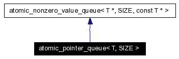

クラス テンプレート atomic_pointer_queue< T, SIZE >
atomic_pointer_queue< T, SIZE >に対する継承グラフ
[凡例]atomic_pointer_queue< T, SIZE >のコラボレーション図 [凡例]すべてのメンバ一覧
[凡例]すべてのメンバ一覧
説明
template<typename T, unsigned int SIZE>
class atomic_pointer_queue< T, SIZE >
atomic_queue.h の 155 行で定義されています。
このクラスの説明は次のファイルから生成されました:
KAME2に対してMon Mar 12 23:19:41 2007に生成されました。
 1.4.3
1.4.3